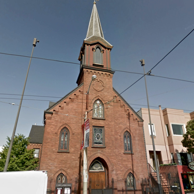
Directions: There is limited street parking so we strongly suggest taking public transit. MUNI trains J, K, L, M and N and the 22 Fillmore bus all stop within a 1/2 block of the church at Church Station. Yellow Cab (415.333.3333) or download the Uber (we have $20-off first-time ride cards) or Lyft smartphone apps.
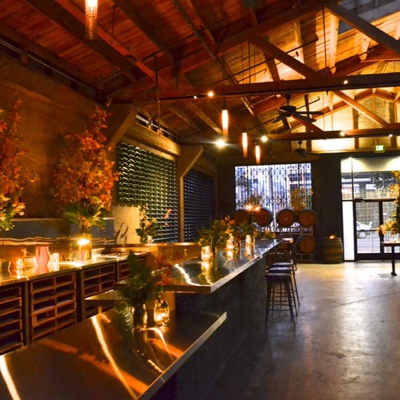
Directions: On Howard between 9th and 10th streets. MUNI trains F, J, K, L, M or N Muni trains from Church Station to Civic Center Station. Yellow Cab (415.333.3333) or download the Uber (we have $20-off first-time ride cards) or Lyft smartphone apps.
Attire is "semi formal". While Ben will be in a tuxedo and Angelina in a very fancy dress, the wedding party will be wearing suits and cocktail dresses.
Spring weather in San Francisco is around 50-70 degrees Fahrenheit with sporadic rain or fog. Wear layers and carry a jacket – warm sunny days fast turn into chilly nights!
Children are very much allowed and are encouraged to attend all wedding events!
All wedding venues are accessible.
We're working with our caterers to accomodate dietary restrictions. Please list any restrictions or allergies on your response card.
Leave your car at home! Both the ceremony and reception are on public transit lines. Taxi fare is also $5-$15 between locations in downtown San Francisco.
The greatest gift you can give us is the opportunity to celebrate with you from wherever you are as we start our married life together.
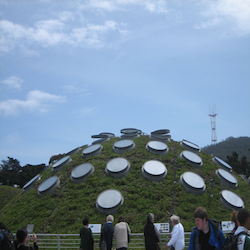
The California Academy of Sciences is the only science museum with an aquarium, planetarium and a rainforest all under one Living Roof! After your visit stop by the Twirl & Dip ice cream truck parked on JFK drive.
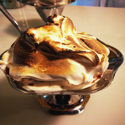
We love the Ice Cream Bar in Cole Valley -- especially their chocolate sorbet, toasted marshmallow fluff and the World's Best Pistachio Milkshake (easily shared and totally worth it).
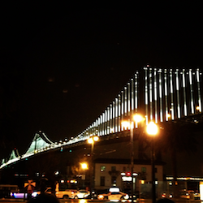
The Saturday Farmer's Market at the Ferry Building is legendary, and we agree. Grab a latte from Blue Bottle and check out some of the best food from around the Bay. At dusk walk the waterfront to catch the Bay Lights art display on the Bay Bridge.
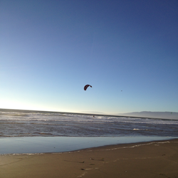
Take the N Judah out to Ocean Beach for a view of some of the area's best surf, take in a panoramic view from The Camera Obscura, or sip a craft beer at the Park Chalet across the Great Highway.
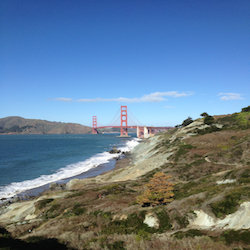
If you're up for a hike we love the Golden Gate National Recreation Area trail from Baker Beach to the Golden Gate Bridge. Get some exercise and a thrilling view away from the tour buses.
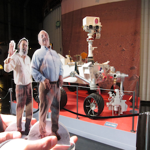
The newly-relocated Exploratorium, THE hands-on science museum, is bigger and better on Pier 17. As a bonus the (free! just reserve tickets online) TCHO Chocolate Factory tour is right next door.
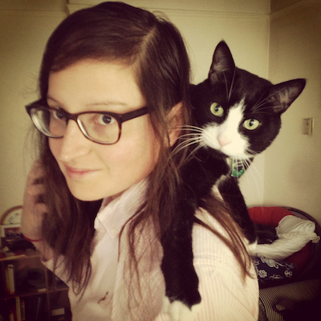
Angelina grew up in Madison, WI in a large family where they spoke English and Spanish at home. Her childhood was largely spent at swim meets, practicing the violin and piano, learning the art of negotiation that comes from being the eldest of 3 sisters, and reading lots of books.
She attended Oberlin College where she was a member of the swim team (go OC, go OC, go!), and graduated from Luther College with majors in Music and Political Science. She earned her Master's degree in Vocal Pedagogy from New England Conservatory, where she partnered with Boston Lyric Opera to conduct the children's chorus.
After grad school, Angelina continued to sing in the Tanglewood Festival Chorus, Boston Cecilia and taught part-time at several Boston area private schools. She also started to grow a small design business in Boston, and in 2011 moved to San Francisco. She currently helps tech startups hire engineers at The Sourcery and sings in the San Francisco Symphony Chorus. She still swims, and in summer 2013 completed her first Trans-Tahoe Relay (that's nearly 12 miles).
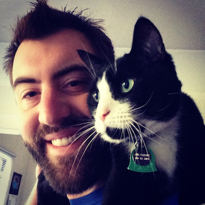
Ben grew up in Poway, California (motto: "the city in the country"), a restful Southern Californian suburb of San Diego. He did 4 years of marching band (instrument: saxophone) in high school. Ben attended the University of California, Santa Barbara, where he received a Bachelors of Science in Mathematics, graduating in three years.
After college, Ben moved to Boston, where he served 3 years in AmeriCorps*VISTA: first as a youth-literacy fundraiser, then at a Cable Access TV station, and finally as a VISTA Leader where he supported other service members. Not having enough of AmeriCorps quite yet, Ben then became Program Director of the Digital Arts Service Corps where he recruited, placed and supported more than 200 AmeriCorps*VISTA members across 25 states. Ben was also active in the community, serving on the board of the Organizers Collaborative (mission: "technology tools and training for progressive social change"), and being a founding director of the Boston Cyclists Union
In 2011, Ben moved to San Francisco and began doing technology stuff full-time. First compeleting a fellowship with Code for America, then working at OkCupid Labs, and currently now at Pantheon.
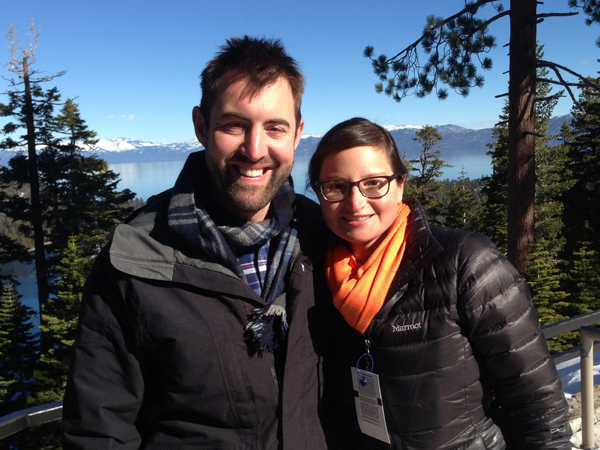
Angelina and Ben met at the birthday party of a mutual friend (thanks Adriana!) in the Jamaica Plain neighborhood of Boston. After dating for 2 years, they moved in together, and 2 years after that, they moved to San Francisco. On February 3, 2013, at picturesque Lake Tahoe, Ben proposed marriage to Angelina. She accepted.
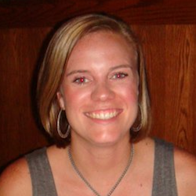
Emily and Angelina grew up next door to each other and are practically sisters. She lives in Madison with her husband, Josh, their son, Corbin, and a big chocolate lab, Chuck. Emily helps hundreds of families as a social worker in Madison public schools.
Sister Alejandra resides in the Winter Wonderland of Minnesota. She and her husband, Dan, enjoy snowboarding, cross country skiing, and when the lakes aren't frozen, kayaking. She is a pediatric nurse and Nurse Practitioner in training by day (and night), and proud mother to Adriana Victoria.
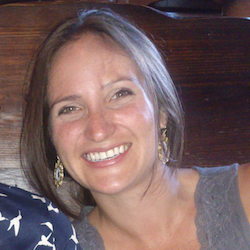
Alba is Angelina's youngest sister. She lives in Milwaukee, designs generators for Kohler, and racks up miles on her bike along Lake Michigan. Alba has also documented many moments of their parents' new dog, Sunny.
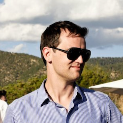
Greg lives in Oakland, otherwise known as the Somerville of San Francisco. He recently completed his MBA from the Darden School of Business and is currently in the leadership program at PG&E. He likes strong coffee, fixed gear bicycles, and macaroni and cheese from Homeroom.
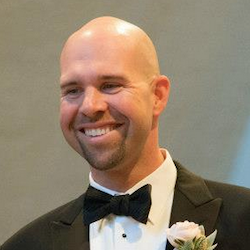
Ben's older and only brother, Alex lives in Santa Barbara with his wife Melisa, two wiener dogs and a pair of birds. He is a high school administrator in Santa Barbara and got most of the sports and travel genes in the family.
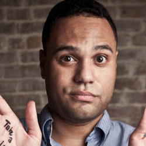
Jules moved to New Orleans at age 10. After evacuating for Hurricane Katrina, he joined AmeriCorps*VISTA to be part of the rebuilding process. He was then gullible enough to be convinced to join Ben's program in Boston. He currently writes stuff in New Orleans.
Danielle served alongside Ben as an AmeriCorps*VISTA member both in the field and as Corps Leaders. Smart enough to give all that up for MIT, she now works as a youth media educator at the Boston Museum of Science.
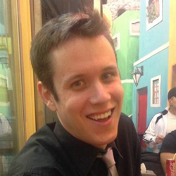
Adam and Ben survived their suburban upbringing together in Poway. A writer, racontour, and hoopy frood, Adam currently lives in Korea as an English teacher.
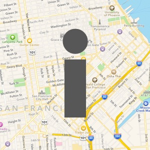
San Francisco has many hotel options. We've selected a few, but you may still find better deals on Yelp. Always be sure to ask about discounts like AAA or AARP; even the group rates here may not be their best. Also, AirBnB has affordable options (especially for larger groups).
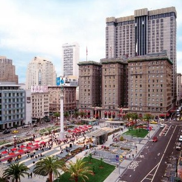
The Westin St. Francis is a historic luxury hotel located at the center of things on Union Square. Group rate is ~$240 (+tax). Use this online link for the group rate.
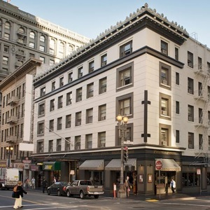
Hotel Abri is a modern, boutique hotel nearby to Union Square with "Street Smart. Urban Vibe." We're waiting on their sales manager to give us a group signup link, but the rate is ~$210 (+tax). Website
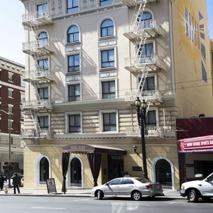
Hotel Bijou is slightly nearby to Union Square and inspired by the cities cinematic history, including a mini-theater showing locally made movies. Again, waiting on the group rate, but rates are ~$160 (+tax). Website
Still looking for the perfect gift? Our registries are running low, but please get us an LL Bean Giftcard if you'd like. We'd definitely be thankful!
We love these beautiful ceramics, made here in the Bay Area—and a big upgrade from our current random dishware. Registry Link
You couldn't pry these flannel sheets and fluffy towels from our cold San Francisco hands. Please email [email protected] if you make a purchase so we can remove items and share our shipping information. Wishlist Link